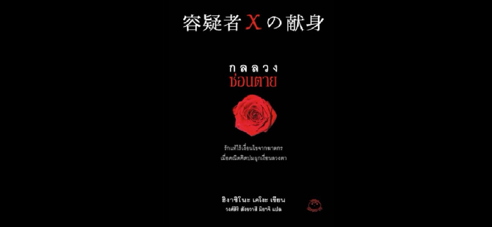
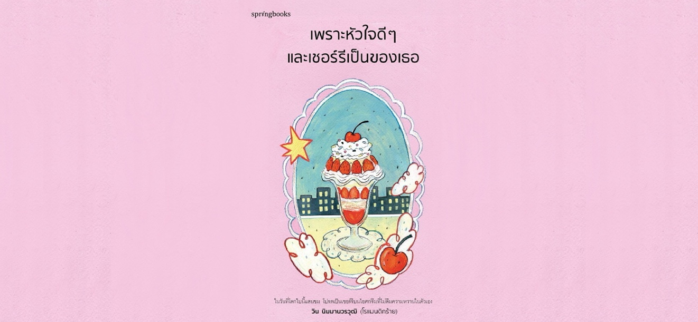
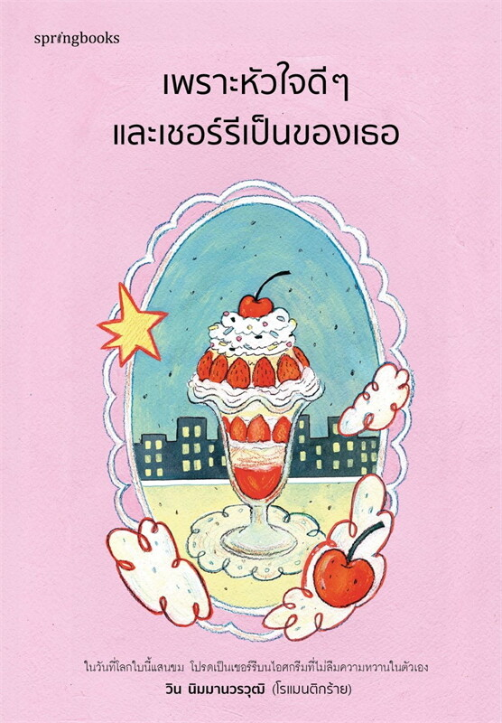

<html lang="en">
  <head>
    <meta charset="utf-8">
    <meta name="viewport" content="width=device-width, initial-scale=1">
    <title>เว็บแนะนำหนังสือ Picha-K</title>
    <meta name="keywords" content="แนะนำหนังสือ, Picha-K, คนรุ่นใหม่, กลลวงซ่อนตาย, เพราะหัวใจดีๆและเชอร์รี่เป็นของเธอ">
    <meta name="description" content=" Picha-K เว็บแนะนำหนังสือของคนรุ่นใหม่ที่จะแนะนำหนังสือที่ได้รับความนิยมอย่างมากในหมู่คนรุ่นใหม่อย่าง กลลวงซ่อนตาย และ เพราะหัวใจดีๆและเชอร์รี่เป็นของเธอ">
    
    
    <link href="https://cdn.jsdelivr.net/npm/bootstrap@5.3.3/dist/css/bootstrap.min.css" rel="stylesheet" integrity="sha384-QWTKZyjpPEjISv5WaRU9OFeRpok6YctnYmDr5pNlyT2bRjXh0JMhjY6hW+ALEwIH" crossorigin="anonymous">
    <link rel="stylesheet" href="css/style.css">
    <link rel="preconnect" href="https://fonts.googleapis.com">
<link rel="preconnect" href="https://fonts.gstatic.com" crossorigin>
<link href="https://fonts.googleapis.com/css2?family=Kanit:wght@100;400&family=Sarabun:wght@100;400&display=swap" rel="stylesheet">
</head>
  <body>
    <h1></h1>
    <script src="https://cdn.jsdelivr.net/npm/bootstrap@5.3.3/dist/js/bootstrap.bundle.min.js" integrity="sha384-YvpcrYf0tY3lHB60NNkmXc5s9fDVZLESaAA55NDzOxhy9GkcIdslK1eN7N6jIeHz" crossorigin="anonymous"></script>
  </body>
</html>


<div class="container-fluid">

  <div class="row sticky-top">
    <nav class="navbar navbar-expand-lg bg-body-tertiary">
        <div class="container-fluid" style="background-color: #ffe4e1;">
          <a class="navbar-brand" href="#"><strong>Picha-K</strong></a>
          <button class="navbar-toggler" type="button" data-bs-toggle="collapse" data-bs-target="#navbarSupportedContent" aria-controls="navbarSupportedContent" aria-expanded="false" aria-label="Toggle navigation">
            <span class="navbar-toggler-icon"></span>
          </button>
          <div class="collapse navbar-collapse" id="navbarSupportedContent">
            <ul class="navbar-nav me-auto mb-2 mb-lg-0">
              <li class="nav-item">
                <a class="nav-link active" aria-current="page" href="index3.html">Home</a>
              </li>
              

              <li class="nav-item dropdown">
                <a class="nav-link dropdown-toggle" href="#" role="button" data-bs-toggle="dropdown" aria-expanded="false">
                  หมวดหมู่หนังสือ
                </a>
                <ul class="dropdown-menu">
                  <li><a class="dropdown-item" href="index.html">ฆาตกรรม</a></li>
                  <li><a class="dropdown-item" href="index2.html">บทความสั้น</a></li>
                </ul> 
              </li>


            </ul>
            <form class="d-flex" role="search">
              <input class="form-control me-2" type="search" placeholder="Search" aria-label="Search">
              <button class="btn btn-outline-dark" type="submit">Search</button>
            </form>
          </div>
        </div>
      </nav>
    </div>
</div>
<br>
<br>

<div id="carouselExampleIndicators" class="carousel slide">
  <div class="carousel-indicators">
    <button type="button" data-bs-target="#carouselExampleIndicators" data-bs-slide-to="0" class="active" aria-current="true" aria-label="Slide 1"></button>
    <button type="button" data-bs-target="#carouselExampleIndicators" data-bs-slide-to="1" aria-label="Slide 2"></button>
    <button type="button" data-bs-target="#carouselExampleIndicators" data-bs-slide-to="2" aria-label="Slide 3"></button>
  </div>
  <div class="carousel-inner">
    <div class="carousel-item active">
      <a href="index.html"></a>
    </div>
    <div class="carousel-item">
      <a href="index2.html"></a>
    </div>
    
  </div>
  <button class="carousel-control-prev" type="button" data-bs-target="#carouselExampleIndicators" data-bs-slide="prev">
    <span class="carousel-control-prev-icon" aria-hidden="true"></span>
    <span class="visually-hidden">Previous</span>
  </button>
  <button class="carousel-control-next" type="button" data-bs-target="#carouselExampleIndicators" data-bs-slide="next">
    <span class="carousel-control-next-icon" aria-hidden="true"></span>
    <span class="visually-hidden">Next</span>
  </button>
</div>
    <br>
    <br>


<div class="container-fluid">
	<div class="row">
		
		  
        <div class="col-md-12 text-center">
           <h1><strong>
            รายการหนังสือ
           </h1></strong>
        </div>
        
        
        
	</div>

<br>
<br>

<br>
<br>
<div class="container text-center">
    <div class="row">
        <div class="col-md-6 px-0">
        
        <br>
        <br>
          <h2>กลลวงซ่อนตาย</h2>
          <p>เขียน ฮิงาชิโนะ เคโงะ</p>
        <br>
        <a class="btn btn-danger" href="index.html" role="button">อ่าน - กลลวงซ่อนตาย</a>

        </div>
<br>
        <div class="col-md-6 px-0">
            
            <br>
            <br>
            <h2>เพราะหัวใจดีๆและเชอร์รี่เป็นของเธอ</h2>
            <p>เขียน วิน นิมมานวรวุฒิ (โรแมนติกร้าย)</p>
            <br>
            <a class="btn btn-danger" href="index2.html" role="button">อ่าน - เพราะหัวใจดีๆและเชอร์รี่เป็นของเธอ</a>
            
        </div>
    </div>


<br>
<br>


    <div class="accordion accordion-flush" id="accordionFlushExample">
      <div class="accordion-item">
        <h2 class="accordion-header">
          <button class="accordion-button collapsed" type="button" data-bs-toggle="collapse" data-bs-target="#flush-collapseOne" aria-expanded="false" aria-controls="flush-collapseOne">
             <h4>About Us</h4>
          </button>
        </h2>
        <div id="flush-collapseOne" class="accordion-collapse collapse" data-bs-parent="#accordionFlushExample">
          <div class="accordion-body"><p>Picha-K เว็บแนะนำหนังสือของคนรุ่นใหม่ที่จะพาคุณท่องเข้าสู่โลกของหนังสืออันน่าตื่นเต้นที่ตัวคุณเองจะไม่อยากพลาด! โดยยกหนังสือที่ได้รับความนิยมในหมู่คนรุ่นใหม่อย่าง “กลลวงซ่อนตา” และ “เพราะหัวใจดีๆและเชอร์รี่เป็นของเธอ” ขึ้นมาแนะนำ</p></div>
        </div>
      </div>
      <div class="accordion-item">
        <h2 class="accordion-header">
          <button class="accordion-button collapsed" type="button" data-bs-toggle="collapse" data-bs-target="#flush-collapseTwo" aria-expanded="false" aria-controls="flush-collapseTwo">
            <h4>About Author</h4>
          </button>
        </h2>
        <div id="flush-collapseTwo" class="accordion-collapse collapse" data-bs-parent="#accordionFlushExample">
          <div class="accordion-body"><p>Picha Krutsin [ ภิชา ครุฑสินธุ์ ] นักศึกษาคณะอักษรศาสตร์ เอกสารสนเทศศาสตร์และบรรณารักษศาสตร์​ มหาวิทยาลัยศิลปากร</p></div>
        </div>
      </div>
      <div class="accordion-item">
        <h2 class="accordion-header">
          <button class="accordion-button collapsed" type="button" data-bs-toggle="collapse" data-bs-target="#flush-collapseThree" aria-expanded="false" aria-controls="flush-collapseThree">
            <h4>Contact Us</h4>
          </button>
        </h2>
        <div id="flush-collapseThree" class="accordion-collapse collapse" data-bs-parent="#accordionFlushExample">
          <div class="accordion-body"><p>หากต้องการติดต่อหรือแนะนำหนังสือ Tel. 012-345-6789 / Email. picha-k@gmail.com</p>
          </div>
        </div>
      </div>
    </div>


</div>